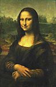
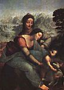
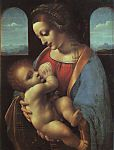

Leonardo Da Vinci
Cliccare sulle immagini per ingrandirle
1 
2 
3 
4 
5 
6 
7 
8 
9 
10 
11 
12 
13 
14 
15 
16 
17 
18 
Leonardo Da Vinci
(Vinci 1452 - Clos-Lucé 1519)

Introduzione
Genio universale, elevato a figura simbolica del Rinascimento, Leonardo da Vinci supera di gran lunga, per il suo fascino e la sua influenza, questo mondo di pittori al quale inizialmente appartenne, in cui i suoi contemporanei videro il suo vero regno e nel quale risiede come uno dei "fari", mai eclissato da cinque secoli a questa parte. Ma questa aureola non fa altro che accentuare i paradossi del suo strano destino. Toscano che persegue, riassume e supera le ricerche del quattrocento fiorentino, abbandona Firenze all'età di 30 anni senza avervi ottenuto il suo posto al sole; una tappa milanese segna lo zenit della sua carriera, mentre la sua vecchiaia errante si concluderà sulle rive della Loira. Come pittore produsse solo un piccolo numero di opere (talvolta incompiute), una dozzina citate dai documenti d'archivio o da testimonianze di contemporanei, e una trentina sicuramente attribuibili a lui, delle quali più di un terzo sono andate perdute. Infine, quest'uomo dalla curiosità infaticabile, che ha avuto la medesima passione per la matematica, le scienze della natura, le arti e le tecniche, ci ha lasciato dei quaderni di annotazioni, migliaia di disegni e di schizzi, progetti sorprendenti, ma nessuna grande realizzazione plastica o meccanica, nessun trattato pubblicato. Visto dall'esterno, Leonardo appare come un ficcanaso geniale, avventuriero della ricerca pura (suo unico interesse), e il cui temperamento paralizza non il potere creativo, ma la volontà creatrice. L'interpretazione del "mistero da Vinci" suscita, da oltre un secolo, una letteratura vastissima ed internazionale, critica o lirica. Il contesto di una nota permette soltanto di richiamare le coordinate essenziali della carriera di Leonardo, di evocare i molteplici orientamenti della sua ricerca, di tracciare un bilancio sommario della sua opera d'artista.
La vita e l'opera
Introduzione
Tormentata, velleitaria, pur non essendo drammatica come quella di un Michelangelo o di un Caravaggio, la vita di Leonardo si contraddistingue per tre periodi quasi uguali (escludendo gli anni dell'infanzia): una prima parte fiorentina, che si conclude nel 1482, fase di formazione in cui Leonardo sembra dedicarsi soprattutto alla pittura; una seconda parte (1482-1499) alla corte dei Milano, in cui le attività dell'ingegnere, dello scultore e del decoratore fanno concorrenza a quelle del pittore; l'ultima parte (1499-1519), errante, nella quale le ricerche scientifiche, pur non cancellando l'attività artistica, assumono un ruolo predominante.
Gli anni fiorentini
Leonardo nacque nel 1452 a Vinci, un borgo arroccato sui contrafforti dell'Appennino, tra le vigne e gli oliveti; vivrà qui fino all'età di sedici anni. Figlio naturale di un giovane proprietario terriero, che più tardi diventerà notaio presso la signoria, non conobbe mai sua madre, sicuramente di condizioni modeste. Tuttavia, allevato dai nonni e da suo padre, in un periodo in cui l'illegittimità non sorprende nessuno, non appare come il bambino "frustrato" che si potrebbe immaginare (e che ispirò a Freud un celebre saggio). Da questa infanzia campagnola, erediterà soprattutto la sua familiarità con la natura toscana, il paesaggio (il primo disegno conosciuto di Leonardo risale al 1473 ed è una veduta della valle dell'Arno), gli animali, le piante, le curiosità naturali (come la grotta che esplora, noncurante della paura, per il desiderio di scoprire "le forme strane dell'artificiosa natura"), forse anche una certa goffaggine nel comportamento sociale e la vocazione alla solitudine.
Nel 1469, morto il nonno, l'adolescente segue il padre e lo zio, che si trasferiscono a Firenze, ed entra nella bottega del Verrocchio, rinomato sia come scultore sia come pittore. Iscritto nel 1472 nella corporazione dei pittori, Leonardo sembra ottenere la fiducia del suo maestro, collaborando al suo dipinto principale il Battesimo di Cristo (1) (avrebbe eseguito gli angeli inginocchiati e il fondo del paesaggio). Si fa riferimento alla sua bellezza, alla sua forza, alla sua passione per la matematica e la musica, ad anche alla sua propensione per l'amore "greco", secondo la moda dell'epoca (una denuncia del 1476 non avrà alcun seguito, ma non lascia alcun dubbio in proposito). A partire dal 1480, non vive presso suo padre, ma in una casa vicina al convento di San Marco, acquistata da Lorenzo de Medici, che gli offre un impiego come decoratore dei giardini. Tuttavia il suo ruolo sembra essere modesto. Leonardo resta ai margini di questa corte di umanisti, della quale Botticelli è il pittore favorito e Marsilio Ficino l'oracolo: più scientifico e positivo che mistico, sembra ribellarsi allo snobismo neoplatonico. Tuttavia riesce ad avere delle commissioni: nel 1478, dalla signoria (pala per la cappella del Palazzo Vecchio, che sarà terminata da Filippino Lippi); nel 1481, dal convento di San Donato a Scopeto (l'Adorazione dei Magi (2) del museo degli Uffizi, che lascerà incompiuta) ; e molti quadri non documentati (Annunciazioni del Louvre e degli Uffizi, Madonna Benois (3) dell'Ermitage di San Pietroburgo, ecc.) sembrano appartenere a questo periodo. Ma la sua situazione rimane secondaria e non rientra nella squadra selezionata nel 1482 per partecipare alla decorazione della Cappella Sistina a Roma. Lavorando lentamente, desideroso di liberarsi dalle preoccupazioni materiali, cerca (e continuerà a cercare per tutta la vita) un mecenate in grado di apprezzare la molteplicità dei suoi talenti. Inizialmente riesce a trovarne uno a Milano.
Gli anni milanesi
Dopo aver appreso che Ludovico il Moro intende erigere una statua equestre in memoria del padre Francesco Sforza, Leonardo parte per Milano nella primavere del 1482 e propone al principe di "imparare i suoi segreti": una celebre richiesta enumera in 10 articoli le sue capacità ingegneristiche per fortificare città e porti, fabbricare bombarde e carri coperti, mentre in tempo di pace la sua opera "può eguagliare quella di chiunque, sia nella costruzione di edifici pubblici o privati sia nel condurre l'acqua da un luogo all'altro", senza dimenticarsi della scultura e dell'arte. Entrato al servizio di Ludovico, che lo tratta con onore e gli assicura un grande agio, la statua equestre lo tiene occupato negli anni seguenti: dopo innumerevoli studi, nel 1493 viene esposta soltanto la bozza del cavallo; scomparirà dopo la caduta degli Sforza. Ma, pur dedicando il suo tempo libero allo studio per il perfezionamento della matematica (frequenta gli eruditi di Pavia, con un'amicizia che lo lega a Luca Pacioli) e proseguendo con le sue ricerche nelle scienze naturali, Leonardo si occupa di molte attività diverse: organizzatore di tornei e di cortei di una corte fastosa, è anche il decoratore del Castello Sforzesco (sala "delle Asse" con le decorazioni di piante del soffitto), adduttore delle acque nei fossati del palazzo, restauratore della "Sforzesca", sfruttamento agricolo modello dei duchi. Malgrado l'ostilità del Bramante, "cacicco" dell'architettura lombarda, fornisce un progetto per la lanterna del duomo di Milano (1487), è chiamato a consulto per il restauro della cattedrale di Pavia (1490).
Per quanto riguarda le commissioni di dipinti - ad eccezione dei ritratti, probabili ma non documentati (ritratto della Belle Ferronière (4), al Louvre, il Musicista (5), a Milano, la Dama con l'ermellino (6), a Cracovia, ecc.) – sono presenti solo all'inizio e alla fine del periodo milanese. Nel 1483 è il turno della pala per la confraternita della Concezione a San Francesco Grande, le cui ante sono affidate ad Ambrogio de Predis, mentre Leonardo si occupa della parte principale, una Vergine con Bambino. Attualmente questo dipinto viene identificato con la Vergine delle rocce (7) di Londra (National Gallery), piuttosto che con quella del Louvre, che sarebbe leggermente anteriore: l'opera, incompiuta, fu oggetto di una controversia, con la confraternita, che si risolse nel 1506. Al contrario, l'affresco dell'Ultima Cena (8), iniziato nel 1496 per il refettorio di Santa Maria delle Grazie, fu completato nel 1498: sollevò un'ammirazione unanime e contribuì a collocare Leonardo tra i primi maestri italiani.
Gli anni erranti
Ma l'Ultima Cena è il canto di cigno di un'epoca felice: l'anno seguente Ludovico è costretto a fuggire, cacciato dall'esercito di Luigi XII. Leonardo soggiorna qualche tempo a Mantova, alla corte di Isabella d'Este, sua ammiratrice (un suo ritratto abbozzato al carboncino è oggi esposto al Louvre), a Venezia (1500), in Romagna (1502), dove si lega alla fortuna di Cesare Borgia, che lo nomina ispettore delle sue fortificazioni; purtroppo la destituzione del condottiero da parte del nuovo papa Giulio II pone fine a questo episodio. Dal 1503 Leonardo è di ritorno a Firenze, dove suo padre sta per morire. Viene accolto con onore, ma si scontra con un giovane, che diventerà suo rivale: Michelangelo. Per celebrare le grandi vittorie di Firenze, la signoria gli commissiona un affresco commemorante la battaglia di Anghiari, mentre Michelangelo è incaricato di rievocare quella di Cascina. I due cartoni sono esposti contemporaneamente nel 1505, ed il successo va agli eroi nudi di Michelangelo, piuttosto che al furioso scontro tra cavalieri rappresentato da Leonardo. Questo rinuncia immediatamente all'esecuzione dell'affresco e, distrutto il cartone, l'opera resta riconoscibile solo per i disegni preparatori e delle copie (ne è celebre anche una per la Leda (9)). Per colmo di sventura, la deviazione dell'Arno, progettata da Leonardo per assediare Pisa, fallisce miseramente per dei probabili errori di calcolo. Schernito e ferito, lascia la sua patria per ritornare a Milano, dove viene festeggiato dagli occupanti francesi. Il governatore, Charles d'Amboise, afferma che "il suo nome, celebre tra i pittori, è rimasto oscuro negli altri campi, per i quali meriterebbe una maggiore fama". Leonardo riprende i vecchi progetti urbanistici, accetta la commissione per una nuova statua equestre (questa volta destinata alla tomba di Giangiacomo Trivulzio, il condottiere che aveva cacciato gli sforza!), ma i francesi vengono cacciati a loro volta nel 1512.
Stavolta Leonardo è attirato a Roma: il nuovo papa, Leone X, è un Medici e un mecenate. Ma il suo uomo di fiducia è Raffaello. Giuliano de Medici, fratello del pontefice, protegge Leonardo, gli fornisce alloggio e, incaricato di bonificare le paludi Pontine, fa approvare il suo progetto. Ma nessuno pensa al vecchio maestro quando la morte di Bramante lascia libero il posto per la direzione dei lavori di San Pietro. Immerso nelle sue ricerche sulla quadratura del cerchio e nelle sue dissezioni anatomiche, appare come un sognatore, totalmente estraneo al mondo reale. Come tale lo vede l'amico di Raffaello, Baldassarre Castiglione (Il Cortegiano, 1508-1518): "Un altro de' primi pittori del mondo sprezza quell'arte dove è rarissimo ed èssi posto ad imparar filosofia, nella quale ha cosi strani concetti e nove chimere, che esso con tutta la sua pittura non sapria dipingerle".
È naturale che stanco, disilluso, privato del suo migliore appoggio a causa della morte di Giuliano nel 1516, Leonardo accetti l'invito di un giovane re vittorioso che sogna di importare nei suoi castelli della Loira lo stile di vita delle corti italiane. Nel maggio 1516, si presenta a François Ier, accompagnato dal giovane e bello Francesco Melzi (1493-1570), il suo discepolo preferito, portando alcuni capolavori dipinti durante i suoi anni di nomadismo e acquistati dal re (oggi esposti al Louvre): la Gioconda (10), la Vergine con il Bambino e Sant'Anna (11), il San Giovanni Battista (12) (e sicuramente il Bacco (13), trasformazione di un altro San Giovanni Battista). La sistemazione nel castello di Cloux, vicino ad Amboise, una grossa pensione e l'amicizia del sovrano, a cui piace ascoltare Leonardo, gli garantiscono, dopo tante traversie, un crepuscolo nobile e tranquillo. Una paralisi della mano gli impedisce di dipingere, ma non di creare. I progetti di scalinate monumentali (forse ispirate a quella di Chambord), del canale Loire-Saône, della bonifica della Sologne, con creazione di una città nuova a Romorantin, proclamano la sua volontà di "continuare". Ma nella primavera del 1519 si ammala, designando Melzi come suo esecutore testamentario e affidandogli tutti i suoi manoscritti; muore il 2 maggio. Fu sepolto nella chiesa di Saint-Florentin d'Amboise, ma i suoi resti furono dispersi durante le guerre di religione.
Il pensatore, l'erudito
Questa vita, gloriosa e intessuta di sconfitte, risponde al carattere di un uomo singolare, sconcertante per i suoi contemporanei, che lo giudicano ermetico, ancora oggi sorprendente per le testimonianze che ci ha lasciato del suo pensiero. La sua scrittura invertita di mancino a stimolato l'ingegnosità di decifratori specializzati. I suoi quaderni, numerosi, distribuiti tra i suoi ammiratori dal figlio di Melzi, furono soggetti a numerose evenienze: i più importanti sono conservati alla biblioteca Ambrosiana di Milano e all'Institut de France; molti sono andati perduti, mentre altri sono stati ritrovati nel 1967 alla Biblioteca Nazionale di Madrid. Annotazioni scollegate di osservazioni scientifiche, accompagnate da schizzi, da commenti metodologici, da riflessioni filosofiche, che non ci consentono di comprendere la vita ed i sentimenti del loro autore. Un silenzio che rivela ciò che Valery definisce "le indifferenze reali" di Leonardo: indifferente alla gloria immediata, ai beni mondani, se non nella misura in cui possono consentirli la libertà di ricerca; imprevedibile a causa dei suoi sbalzi d'umore, le sue ritirate, le sue alternanze di entusiasmo e di apatia di fronte all'opera in corso, i suoi abbandoni, derivanti da un'esigenza di perfezione. È animato da una sola passione: la conoscenza totale dell'universo visibile, nelle sue strutture e movimenti. È una "passione intellettuale che mette in fuga la sensualità" e da cui nasce "l'amore [...], che cresce mano a mano che questa conoscenza diventa più ferma".
Conoscenza razionale, certo. Bisogna credere al Vasari, secondo il quale Leonardo "teneva in più alto onore l'essere filosofo che cristiano"? In ogni caso, le nozioni di caduta e di redenzione, il dramma cristiano della salvezza, gli sono estranei. D'altra parte Leonardo sembra ugualmente indifferente al paganesimo estetico dei suoi contemporanei, alla mitologia come all'archeologia. Con una sorta di stoicismo sereno, con il culto della solitudine, il suo atteggiamento rimane quello dell'erudito che rifiuta gli argomenti dell'autorità e fonda il suo giudizio sull'esperienza.
Ma che tipo di erudito, e in quale misura? Leonardo è apparso per molto tempo come l'immagine del gigante autodidatta (come lui stesso scrive: "Si crederà fondato criticarmi attribuendomi la mancanza delle lettere"), del precursore incompreso. All'inizio del XX secolo una reazione, senza dubbio eccessiva, ha fatto di lui un erudito, erede di tutto il pensiero scientifico medievale. Oggi si tende ad avere un'opinione intermedia: Leonardo non è un illetterato, ma condivide la cultura media dei fiorentini del suo tempo. Conosce un po' di latino, ha familiarità con le Metamorfosi di Ovidio; conosce Dante e Petrarca, ma si nutre soprattutto dei bestiari e delle zoologie moraleggianti che influenzano il Medio Evo, così come dei narratori satirici fiorentini.
La sua immagine del cosmo, gioco di forze armoniche e ricettacolo della luce, con un'unità profonda del mondo della natura e del mondo dell'anima, rivela il platonismo diffuso dell'epoca, al quale si aggiungono le dottrine di Nicola Cusano sul movimento, principio di tutta la vita. Inoltre, la sua formazione orale di praticante, iniziata nella bottega del Verrocchio - geometria, prospettiva, ecc. - fu perfezionata successivamente con la lettura dei trattati di meccanica, dei "teatri delle macchine", già numerosi in Italia nella seconda metà del XV secolo, grazie alla frequentazione di vari uomini di scienza. Leonardo non diventerà mai uno scienziato come Copernico o Newton, che rivoluzionarono la scienza con le loro scoperte e le loro ipotesi. La sua terminologia fisica resta imprecisa e contraddittoria. Infatti, pur celebrando "la suprema certezza delle matematiche", è prima di tutto un "visivo", per il quale l'occhio, "finestra dell'anima, è la principale via per la quale il nostro intelletto può apprezzare pienamente l'opera infinita della natura". La curiosità universale di Leonardo rifiuta le nostre distinzioni tra scienza pura e scienza applicata, tra belle arti ed arti meccaniche. Amplia e porta alla sua perfezione questo tipo di ingegnere-artista, del quale Alberti era stato il primo modello.
La sua ricerca abbraccia l'astronomia e la geologia, la geometria e la meccanica, l'ottica e l'acustica, la botanica e la metallurgia. Ma nei suoi quaderni possiamo identificare tre argomenti dominanti, che colpiscono per l'abbondanza o la singolarità delle annotazioni. Il primo è l'anatomia, con le sue descrizioni minuziose, frutto di molte dissezioni illustrate con magnifici disegni, dei quali alcuni sono consacrati all'anatomia comparata (giovani/vecchi, uomo/animale). In questo senso Leonardo è quasi un precursore di Vesalio, il fondatore dell'anatomia moderna. Poi viene la meccanica, applicata alle opere d'ingegneria - con le invenzioni balistiche, i carri d'assalto, le pompe e le draghe, i ponti e i canali - oltre ad alcuni progetti di macchine volanti basate su analisi sagaci ed innovative del volo degli uccelli. Infine, la vita del globo terrestre, attraverso la meccanica dei fluidi e la geologia. Niente eccita l'immaginazione poetica di Leonardo più del "balletto eroico" della terra e dell'acqua. Da ciò derivano i suoi studi sui vortici, i significativi schizzi panoramici che illustrano la formazione delle vallate alpine, le analisi dei fossili, gli studi sulla forma delle conchiglie, sul motivo della loro presenza sia nelle montagne che nel mare. Da tutto ciò ha origine anche la visione apocalittica di Leonardo, che associa il destino degli uomini ai cataclismi cosmici: "Vedremo sulla terra delle creature che si uccidono tra loro senza tregua. La loro cattiveria non avrà limiti. La loro violenza distruggerà le grandi foreste del globo… O terra, cosa ti trattiene dallo spalancarti ed inghiottire l'uomo nelle profondità dell'abisso". Questo è Leonardo, visionario cosmico e "mago" evocante, addolcito dalla barba e dai capelli ondulati, il cui presunto e severo autoritratto di colore sanguigno è conservato alla biblioteca reale di Torino.
L'artista
Che cosa rimane di questo sforzo immenso sul piano della creazione artistica? Per l'architettura e la scultura, alcuni progetti, puramente teorici, relativi alla prima. Alcuni bei disegni di chiese a cupola centrale con absidiole laterali - che potrebbero essere del Bramante - attestano la predilezione del Rinascimento per gli edifici a pianta centrale, simbolo della perfezione. Per la scultura, numerosi studi furono destinati ai monumenti per gli Sforza e Trivulzio: ma solamente il piedestallo e il movimento del cavallo, più o meno impennato, ci riconducono a Leonardo; il cavaliere è assente, o appena abbozzato. Delle sculture a lui attribuite, nessuna è certa, anche la più verosimile, come il piccolo gruppo equestre in bronzo di Budapest. Dopo tutto Leonardo sembra essersi interessato poco di scultura: il fatto di essere più durevole della pittura non le riconosce alcuna dignità. Per Leonardo la scultura è "inferiore, poiché non può rappresentare le cose trasparenti o luminose". Resta "un'arte dal discorso molto breve", mentre la pittura, "cosa mentale" il cui "oggetto consiste nel mostrare l'uomo e le intenzioni della sua anima", è "di meraviglioso artificio e di speculazione elevata".
Sembra che Leonardo abbia dedicato un trattato a questa arte maggiore, trattato che avrebbe composto a Milano, offrendolo a Ludovico, ma scomparso in seguito. Il Trattato della pittura (14) (Codex urbinas, Biblioteca vaticana), pubblicato alla metà del XVII secolo, è una compilazione, ricca e maldestra, attribuibile a Melzi. Per ciò che riguarda i Quaderni (15), ci forniscono numerose ed acute osservazioni inerenti tutti gli aspetti dell'arte del pittore, del disegno, della prospettiva e della tecnica pittorica. La caratteristica principale consiste nel primato attribuito al disegno dal vero sullo studio dell'antichità, al modello sul contorno. Il segreto della pittura è nel gioco di ombre e luci, cioè il chiaroscuro: "Colui che evita di mettere le ombre rende la propria opera disdicevole ai buoni spiriti, per il favore del volgare che ricerca solo la brillantezza del colorito e disdegna la bellezza e meraviglia della luce". Si è spesso celebrata la "modernità", a volte minuziosa e poetica, delle annotazioni di Leonardo sul colore della rosa di primo mattino, l'effetto di sfondo dei fumi e della polvere delle città, il colore delle montagne in lontananza, che in inverno perdono le tinte azzurrate, o il rossore del sole negli intervalli della pioggia. E questo "luminismo" spiega l'importante ruolo storico di un pittore così avaro con le sue opere.
I primi dipinti conservati di Leonardo si collocano nella tradizione plastica fiorentina, molto scritta e leggermente secca. Lippi, Verrocchio, Ghirlandaio sono presenti nelle Madonne Litta (16) e Benois (entrambe all'Ermitage), nelle Annunciazioni, nel San Girolamo (17) incompiuto del Vaticano, studio anatomico vigoroso e scultoreo. L'Adorazione dei Magi degli Uffizi è distinguibile solo per la concezione originale della scena: Leonardo sostituisce i cortei sontuosi, dei quali il Gozzoli ci ha offerto l'esempio più bello, con l'immagine di una folla sparsa e come presa dal panico dovuto a una visione insolita. Ma le opere milanesi (si tratterà forse dell'influenza dei paesaggi umidi e grassi della Lombardia?) sono caratterizzate dal modello vaporoso e dal madore dello "sfumato", dai toni glauchi degli sfondi: come la Vergine delle rocce, con il suo misterioso sfondo d'acqua e guglie rocciose fuse nella luce, oltre la semioscurità della grotta. E la sorpresa provocata dall'Ultima cena, la sola grande opera portata a temine, non è dovuta soltanto alla novità della composizione, che riprende quella di Andrea del Castagno, ma suddivide gli apostoli in gruppi separati ed ansiosi: psicodramma di fronte all'annuncio del tradimento e all'incertezza sul traditore. Una novità di importanza analoga è la fusione spaziale realizzata dalla morbidezza dei colori, questa penombra in cui sono immersi i personaggi di fronte allo scorcio dello sfondo con le colline azzurre.
L'altra suggestione nuova di Leonardo pittore è data dall'enigma dei volti nei quadri dell'ultimo periodo: la strana concezione della Vergine con il Bambino e Sant'Anna, in cui la Vergine si getta sul Bambino come per proteggerlo, mentre Sant'Anna resta immobile e sorridente, come una sfinge annunciatrice di un destino ineluttabile; la bellezza riflessiva e calma de la Gioconda, della Leda timorosa e lontana, del San Giovanni Battista e del Bacco. Che si tratti del ritratto di una dama fiorentina - Monna Lisa, moglie di Francesco del Giocondo - o di figure immaginarie, ritroviamo sempre lo stesso sorriso ironico e dolce, lo stesso viso androgino, con questa "tenerezza melanconica" che incantava Stendhal: immagini di sogno che, per l'estetismo decadente della fine del XIX secolo, simbolizzano il mistero dell'universo. Ma anche per coloro che rifiutano una certa "giocondolatria", la creazione leonardesca conserva il suo significato storico e il suo valore simbolico.
Quanto ai disegni, tutti i nostri contemporanei ammettono che sono sufficienti per collocare Leonardo tra i più grandi maestri. Ne conosciamo diverse migliaia, e ogni singolo disegno ha una specificità. Si tratta per lo più di schizzi esplicativi di un testo, ma ciò non ne sminuisce il valore estetico. Ma, considerando i disegni separati e le grandi collezioni di Windsor e dell'Ambrosiana, si resta stupefatti per la loro intensità, il loro fremito di vita e la loro varietà.
Varietà di tecniche: disegni giovanili eseguiti con punta in argento, che detronizzano a poco a poco la sanguigna, i disegni in pietra nera evidenziati con gesso bianco, più morbidi e sottili; e, come costante, disegni a penna, più corsivi, a commento di un testo o come primo abbozzo di una composizione. Varietà anche negli stili: alcuni disegni sono caratterizzati dalla precisione tagliente dell'oreficeria o di una medaglia, come quel pezzo d'insieme (veramente eccezionale) che è il celebre profilo di uomo con elmo del British Museum; altri si riducono a giochi di curve e onde che suggeriscono il movimento tridimensionale con una singolare forza (studi di gatti, combattimenti di cavalieri per la Battaglia d'Anghiari (18)). La varietà dei temi non è da meno, in quanto riflette tutto l'universo di Leonardo: quello dello scienziato, già menzionato, e quello dell'artista. Si tratta dei numerosi studi per l'Adorazione dei Magi, le Vergini, l'Ultima Cena, la Battaglia, appassionanti proprio perché consentono di seguire le tante esitazioni e le crisi di coscienza del loro creatore; sono le "teste d'espressione", a volte eroiche, più spesso contratte in smorfie, addirittura caricaturali, che contrappongono le età ed i caratteri; sono gli studi di animali, soprattutto il cavallo, gli studi dei fiori e dei rami, allo stesso tempo pieni d'amore e quasi inquietanti per la precisione e l'intensità; infine i paesaggi, ora di una natura bucolica, con i suoi contadini e seminatori, ora di un mondo elementare e convulso: le immagini del diluvio universale possono essere annoverate tra le invenzioni più sorprendenti di Leonardo.
È soprattutto a questo personaggio di "grande sognatore" che gli uomini sono stati sensibili nel corso dei secoli. L'impatto del pittore è stato considerevole a giudicare dal grande numero di varianti e copie del XVI secolo – che pongono difficili problemi ai critici –, con riflessi leonardeschi in alcuni allievi fiorentini invaghiti della ricercatezza, Lorenzo di Credi (1456-1537) o Piero di Cosimo (1462-1521), e per l'importanza della sua influenza in Lombardia, che dette luogo a un folto gruppo di pittori: Bernardino Luini (ca. 1485-1532), Ambrogio De Predis (1455-ca. 1510), Giovanni Antonio Boltraffio (1467-1516).
Ultima grande figura del quattrocento, Leonardo è anche l'iniziatore dell'"Alto Rinascimento". Si percepisce la sua influenza in Raffaello (che si ispirò agli apostoli di Milano per la sua Scuola d'Atene), in Fra Bartolomeo (1472-1517), in Andrea del Sarto (1486-1530). Ma occorre ricordare soprattutto la traccia luminosa, lasciata negli ultimi quattro secoli dalla sua inquietudine e curiosità universale: Rubens e Prud'hon, Goethe, Stendhal e Valéry lo hanno accolto come il modello del pittore, ma anche dell'uomo universale, dello scienziato unito al poeta e all'artista.

© 2006 Umanista.Net